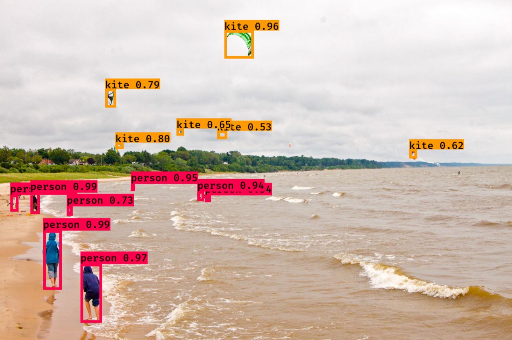

用Git下载keras-yolo3库
首先你电脑如果安装了Git，那在你希望存储的文件夹目录中打开Git Bash，接着输入一行命令就可以了~
$ git clone https://github.com/qqwweee/keras-yolo3.gitGit会很快帮你下载整个仓库(Repository)~
那如果你没有安装Git也没关系，打开Github的keras-yolo3仓库，点击Clone or download后再点击Download ZIP，也是一样的。
用pip下Python库
Github上作者qqwweee已经把代码都完成了，所以我们只需要确保所需的库也安装了，就万事俱备，只欠东风！ * TensorFlow * Keras * h5py * OpenCV
通常安装库的方法会选用pip来下载安装，打开Anaconda prompt之后输入命令：
activate python35 # 激活python3.5环境
pip install tensorflow
pip install keras
pip install h5py
pip install opencv-python完成安装后就开始正题了！
YOLO的实现
下载yolov3.weight和格式变换
我们可以直接从YOLO官网可以下载预训练的权重yolov3.weight，也可以通过命令行进行下载；
先打开Anaconda Prompt（或者cmd）并路径更新到当前keras-yolo3所在文件夹路径，通过下面命令行可完成对yolov3.weight的下载，并转成TensorFlow所支持的h5文件。
wget https://pjreddie.com/media/files/yolov3.weights
python convert.py yolov3.cfg yolov3.weights model_data/yolo.h5测试demo图像文件
如果想对某张图片进行检测，可以将这张图片放在当前keras-yolo3所在文件夹，再通过Anaconda Prompt运行下面命令
python yolo_vedio.py --image命令行运行后会弹出“Input image filename:”，输入指定图片文件即可。
举个栗子~

大家一起放风筝~
YOLOv3的Output效果不错！！

Enjoy your YOLO now !!!